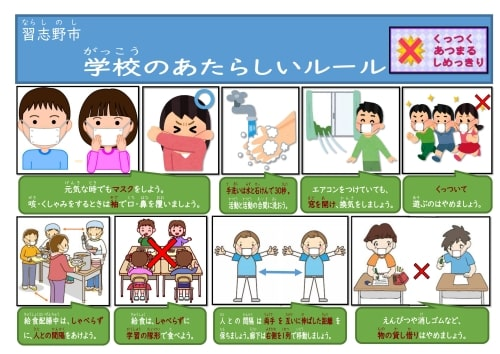
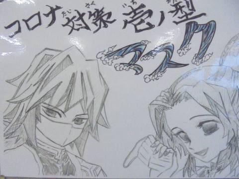
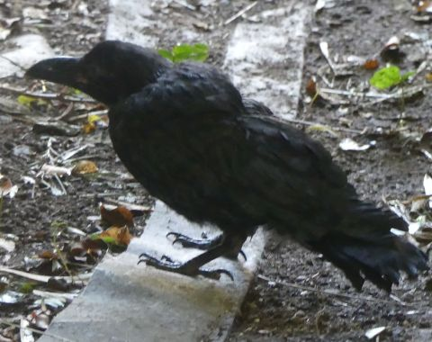
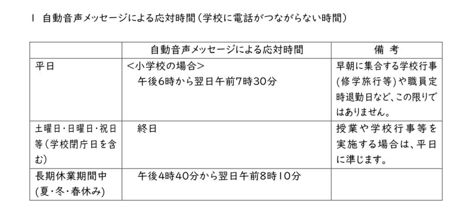
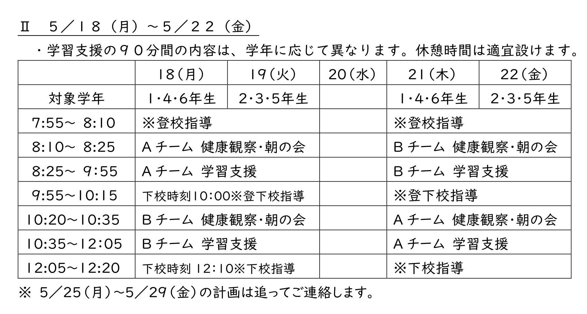
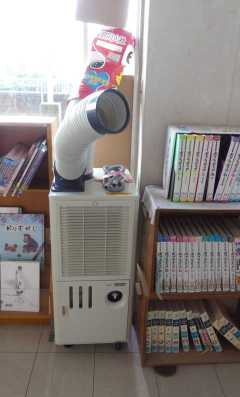

児童（じどう）のみなさんへ
▼のところは、ひらいたりとじたりできます。

拡大（かくだい）できます。
しっかりと読（よ）みましょう。
防災意識高揚のための啓発動画 千葉県 防災政策課
防災についてよくわかる動画です。
他の動画もぜひ見てね。
なかよし活動 in 業間 ７月２８日
クリックすると大きい画像が見られます。
なかよし活動とは・・
本校では、１年生から６年生までのたてわりメンバーで２４のなかよしグループを作り、なかよし活動を行っています。
上級生がリーダーとなり行事や清掃など様々な活動を展開します。
おかげで上級生はリーダーとして頑張ったり、下級生に対して優しい気持ちを持つことができたりします。
下級生はそんな上級生の姿を見て育ちます。
その結果、年齢の違いを乗り越えてコミュニケーションがとれる子どもに育っていきます。
今年度は、本来なら４月に体育館で全員集まって行う「なかよし顔合わせ」や
５月初旬になかよしグループで香澄公園まで行く「全校遠足」ができていません。
これでは本校のよい伝統が失われてしまうのではないかと考え、業間の時間の２０分間でグループごとに遊びを考えて
校庭で遊ぶことにしました。
これまでの記事
終業式 夏やすみの生活について（動画） ７月３１日
終業式は、放送により行われました。そのなかでＷ生徒指導主任監督で夏休みの生活についての動画を製作し教室で見ました。Ｂ先生・・
「な」っとくいくまでとりくもう。
「つ」つめたいものはひかえめ。
「や」すみはあっというまだ。
「す」すすんでやろうおてつだい。
「み」みんなそろってしぎょうしき。
【特集】謎（なぞ）につつまれた本校の遺跡（いせき）
はるかむかし、向小の古代人（こだいじん）により、ふしぎな物（もの）ががつくられました。
現代（げんだい）では、それがどんな目的（もくてき）で作られたのか知（し）る者（もの）はいません。


一つは周囲（しゅうい）には宇宙（うちゅう）への憧（あこが）れを意味する青い装飾（そうしょく）がほどこされ、
一番上に水道の蛇口（じゃぐち）がつあり、四角い小さいプールが組み合わされ、それらのプールには水が順に流れるように高低差（こうていさ）がつけられています。


古代史（こだいし）に詳（くわ）しい Ｇ 教務主任（きょうむしゅにん）によれば、水を浄化（じょうか）する
システムではないか？としていますが、その利用法（りようほう）はさだかではありません。


付近（ふきん）には、廃墟化（はいきょか）した「かまど」がありました。お墓（はか）ではありません。
ここで古代人たちがが火をおこし何かを食べていたと推測（すいそく）されます。しっかりしたつくりで、
当時の文明（ぶんめい）の勢（いきお）いを感じる遺跡です。
千羽鶴（せんばづる）のおくりもの ７月１０日
学校(がっこう)評議員(ひょうぎいん)の松濱(まつはま)様(さま)が、新型(しんがた)コロナ感染症(かんせんしょう)が早(はや)くおさまり、
楽(たの)しい学校生活が送(おく)れるようになることを願(ねが)って、千羽鶴(せんばづる)を折(お)ってくださいました。
皆(みな)さんのことを大切(たいせつ)に思(おも)う気持(きも)ちがこもっています。現在は職員室前に飾ってあります。


たなばた ７月７日
本校では、この時期、１・２年生の廊下と図工室前に笹を立てて願いごとを短冊に書いています。


ポスターの贈り物（おくりもの） ７月１日

戸締まりをしていたら、クラスのうしろにマスク着用をよびかけるかっこいいポスターが貼ってありました。
担任の橋本先生に「これは誰が描いたのですか？」と聞いたところ、
「保護者の方からです。」とのことでした。描いてくださった保護者の方ありがとうございました。
とても気持ちの入った作品をみて心が和みました。
そういえば、アヒル小屋の前に貼ってあるかわいいホイップの絵も昨年、保護者の方からいただいたプレゼントです。
授業に潜入
クリックするともう少し大きい画像が見られます。 ６月２２日
全クラスの授業シーンを撮（と）ったので掲載（けいさい）します。一部、「１年生学校探検（たんけん）」や「２年生やごとり」、「新入生歓迎会（しんにゅうせいかんげいかい）」、「音楽の授業」の画像も入っています。
カラスに気をつけよう ６月１８日

最近、正門付近で数羽のカラスが旋回（せんかい）しています。
カラスは６月から７月に子どもが巣立ちの時期（じき）を迎（むか）えて、気が立っているそうです。
人に攻撃（こうげき）してくることもあります。
登校中、普通に歩いていればカラスは見ているだけで、攻撃してくる様子はありませんでした。
しかし、念のために登下校の際（さい）は、帽子（ぼうし）を深めにかぶり、
もし自分めがけて飛んできたら、その場から離れるとともに腕（うで）をあげて自分の頭や目、首を守りましょう。
そうすることでカラスは羽があたると思い、近づかなくなります。
また、カラスの子どもが地面にいたらぜったい近づかないでください。カラスの子どもが
人間にいじめられていると勘違いして親が攻撃してきます。
詳しく知りたい人は、次のサイトを見てみましょう。
カラスの繁殖期はいつ？とくに注意が必要な時期や被害に遭わない方法
入学お祝いケーキ ６月１８日

今日は、給食で「入学お祝（いわ）いケーキ」が出ました。食物アレルギーに対応（たいおう）した卵・乳・小麦（たまご・ちち・こむぎ）を材料（ざいりょう）に使っていない
とパッケージに書いてありました。イチゴ味（あじ）でとてもおいしかったです。
給食センターの栄養士（えいようし）さん、いつも工夫した献立（こんだて）をありがとうございます。
うさぎニュース！ 小屋周辺にステルス機っぽい謎（なぞ）の物体出現 ６月１６日
昨日昼すぎ、うさぎのショコラが暑さでぐったりしているのを岡本さんが発見。
そこで（２年生以上はプールなどで見覚えがあると思います）
うさぎ小屋のまわりに遮光幕（しゃこうまく）を張り巡（めぐ）らせました。
こちらは裏（うら）がわのようすです。
うさぎ小屋は特に午後、西日が当たってとても暑くなるのですが遮光幕の日陰（ひかげ）ができたため
今日はうさぎのショコラはのびていませんでした。
チャドクガやハチ、セアカゴケグモ、ヌカカに気をつけよう

刺されると翌日くらいからかゆみが出て水ぶくれのようになったりするそうです。
ご存じのとおり向山小学校は山の上にあります。そして、
校歌３番にもあるように「緑あふれる小学校」で自然豊かです。
動物だと
タヌキや
ハクビシン、
かめ、昆虫ではページトップに載せたコクワガタや
４年生のページに載っているカマキリやクロアゲハ、プールにいるヤゴ、
３年生のページに載っているモンシロチョウなどなど
ほかにも様々な生物が生きています。
しかし、危険（きけん）な生物も過去に近所で目撃されています。登下校中や校庭で
「チャドクガ」、
「スズメバチ」、
「セアカゴケグモ」
を見つけたら絶対に触らず、すぐに担任の先生や教頭まで伝えてください。
死んでいても触らないようにしましょう。
登校が始（はじ）まりました。保護者の方（かた）といっしょに自分（じぶん）の通学路（つうがくろ）などを
よく見て、どこが危（あぶ）ないのか、子ども１１０番（ばん）の家（いえ）はどこか、危険（きけん）なことが
起（お）きたらどうするかなどを確認（かくにん）しておきましょう。
ALT（Assistant Language Teacher）の先生が着任しました。
Ms.Aivy Marie Rasonabe Tandog（アイヴィ先生）は、 火曜日から木曜日に
３・４年生の外国語活動と５・６年生の外国語科の授業で生の英語を教えてくれます。
優しくチャーミングな先生です。以前も向山小に配属されていたので、覚えている児童も多いと思います。
Mr.Jonathan Erik Neison（ジョン先生）は、 月曜日に１・２年生の外国語活動を教えてくれます。
明るく元気な先生です。「習志野市は、はじめてなので習志野市や学校のことを教えてください。」
と言ってました。
宿題（しゅくだい）と持ち物（もちもの）
それぞれのページの宿題をしっかりと読（よ）み、少（すこ）しずつ進（すす）めましょう。
保護者（ほごしゃ）の方といっしょにみてください。
5/13～5/29 月火水金10:00～12:00、木15:00～17:00、
5/18～5/29月～金9:00～10:00、14:00～15:00（金曜のみ～15:30）の時間（じかんで）で放送（ほうそう）されます。自宅（じたく）での学習としてぜひ見てみましょう。
今回（こんかい）は、言葉（ことば）の正（ただ）しい使（つか）い方を覚（おぼ）える方法（ほうほう）です。クイズがあるのでやってみましょう！言葉博士（はかせ）になれるかも。
音楽（おんがく）の歌（うた）の課題（かだい）を音楽室（おんがくしつ）にアップしました ５月１２日
♫ 田松先生（たまつせんせい）の動画（どうが）もあるので一緒（いっしょ）に歌いましょう。 ♫♪
運動不足（うんどうぶそく）にならないように、おうちでできる運動を選（えら）んでやってみよう！！
１年生のページに算数（さんすう）の動画をアップしました。 ５月１２日
おうちでできる、さんすうゲームをしょうかいしています。どの先生が話（はな）しているかわかるかな？
本校では外国語活動（がいこくごかつどう）・外国語科の授業研究（じゅぎょうけんきゅう）が盛（さか）んです。
このたび、本校職員（ほんこうしょくいん）が製作（せいさく）し、市総合教育（しそうごうきょういく）センターの
学習（がくしゅう）サイトに動画が掲載（けいさい）されました。みてね！
４月（がつ）２２日（にち）から５月１日までの宿題（しゅくだい）です。
それぞれの宿題をしっかりと読（よ）み、少（すこ）しずつ進（すす）めましょう。
５年生の宿題に一部変更がありました。お詫（わ）びして訂正（ていせい）します。
かっこいいＵノ某（ぼう）先生の声（こえ）や昔（むかし）の向山小のよい子の歌声（うたごえ）が聞（き）けます！
校長先生（こうちょうせんせい）から児童（じどう）の皆（みな）さんへのメッセージです。ぜひ見てください。
悩（なや）んだり困（こま）っていることがあったら、すぐに相談してね。
校歌（こうか）を歌（た）おう ４月２２日更新 追加（ついか）あり
前音楽主任（まえのおんがくのせんせい）より「向山小学校校歌」が送（おく）られてきました！
上ノＢ先生ありがとう。１年生はこれを聴（き）いて旋律（せんりつ）や歌詞（かし）を覚（おぼえ）えましょう。
４月１５日は、本校（ほんこう）の創立記念日（そうりつきねんび）です。
４月（がつ）１３日（にち）からの宿題（しゅくだい）です。
次（つぎ）は、４月２２日に訪問します。それぞれの宿題をしっかりと読（よ）み、
少（すこ）しずつ進（すす）めましょう。
１０日までの各学年（かくがくねん）の宿題（しゅくだい）です。
2020年5月7日時点での本校のサイト
悩（なや）んだら・・・ 相談窓口（そうだんまどぐち）の紹介（しょうかい）
本校の相談窓口
教頭（きょうとう）、養護教諭（ようごきょうゆ）、特別支援・教育相談担当（とくべつしえん・きょういくそうだんたんとう）
担任（たんにん）や担任以外（いがい）もＯ.Ｋ.です。
おたより、メール、電話（でんわ）、会ってお話しなど、どのようなかたちでもかまいません。
お気軽（きがる）にどうぞ。
一中学区スクールカウンセラーに相談がある場合も、お取り次ぎします。
TEL ０４７-４５１-１７１７ E-mail：
市総合教育センター 電話相談・来所相談等
教育相談
いじめメール相談
子どもの不安をやわらげるためにできること
※ 相談内容については、秘密を守ります。安心して御相談ください。
受付時間(平日) 午前 9：00～12：00 午後 13：00～17：00
| 教育相談 |
０４７-４７５-８３４１ |
| 特別支援教育相談 |
０４７-４７６-０２１０ |
| 青少年テレホン相談 |
０４７-４７５-７８６７ |
国や千葉県の電話相談窓口
こどもに関する相談窓口 千葉県
| 24時間受付教育相談 |
０１２０-４１５-４４６ |
千葉県子どもと親のサポートセンター |
| 千葉いのちの電話 |
０４３-２２７-３９００ |
社会福祉法人千葉いのちの電話 ２４時間 |
| 24時間子供SOSダイヤル |
０１２０-０-７８３１０ |
文部科学省 |
| 子どもの人権110番 |
０１２０-００７-１１０ |
法務省 |
| チャイルドライン千葉 |
０１２０-９９-７７７７ |
チャイルドライン支援センター 16:00～21:00 |
| ライトハウスちば |
０４３-４２０-８０６６ |
千葉県子ども・若者総合相談センター火～日 10:00～17:00 |
本校から
▼ 印の行はクリックまたはタップすると隠れた記述が表示されます。


運動会参観者事前調査票は９月２８日（月）までに
お子様をとおして担任までご提出ください。
なお、
運動会専用来校証は切り離して運動会当日
にご持参ください。紛失の場合は、色を変えたものを再発行させていただきます。
※文書部分をクリックするとPDF出力できます。

熱中症対策について
8月１７日（月）から登校が始まります。
熱中症予防サイトよると１７日の登下校時の暑さ指数が30℃を超え
「厳重警戒」領域に入ることから、当面の間、お子様の登下校時の熱中症対策を
以下の例のとおりお願いします。
持参品には必ず記名してください。
・帽子は必ずかぶり、マスクは密にならないようであれば外す。
・水筒は必ず持参し、他にペットボトルにスポーツドリンク等を凍らせ、
タオルなどで保冷し下校時に飲む。
・日傘をさす。
・タオルを水につけ絞って首に巻く。
・保冷剤等熱中症対策グッズを持参する。
併せて以下のことについてお子様にお伝えください。
〇なるべく日陰を選んで歩く。
〇「吐き気」「めまい」「頭痛」「大量の発汗」「けいれん」「倦怠感」「疲労感」など
熱中症の初期症状を感じたら、すぐに
・まわりの大人や友達に知らせる。
・商業施設や日陰などの涼しい場所で体を冷やす。
・水分補給をする。
以上です。お手数をおかけしますが、よろしくお願いします。
８月１７日以降の主な行事予定について
本日、無事に１学期の終業式を終えることができました。コロナ感染症対策等、多大なる御協力に厚く御礼申し上げます。
さて、遅くなりましたが、８月１７日以降の行事予定につきまして現在決まっている内容をまとめましたのでご連絡します。
なお、コロナ感染症に係る今後の動向により、変更になる場合があります。ご承知おきください。
２学期始業式
８月１７日（月）下校１４：１０ 給食あり
運動会
１０月３日（土） 午前のみ １部内容縮小。お弁当なしで計画中です。
コロナ感染症対応の土曜日の隔週授業について
９月１２日（土）、９月２６日（土）、１０月１０日（土）、１０月２４日（土）
１１月７日（土）、１１月２１日（土）計６日間、給食なし。
６年生特別授業
１２月２４日（土）給食あり 下校時刻未定 ６年のみ（１～５年はお休み）
習志野市HPより（６月１日付け・参照）
https://www.city.narashino.lg.jp/smph/kosodate/kyoiku/konngo.html
登校に際してののお願い
６月１５日（月）より通常日課が開始されましたが、新型コロナウイルス感染症の流行はまだおさまってはおりません。
感染症対策には細心の注意を払ってまいりますが、ご家庭でも人混みは避ける、手洗いとうがいの励行、
人とのソーシャルディスタンスのとりかたについて、お子様にご指導をお願いします。
登校時刻は７時５０分から８時０５分までの間です。マスクの持参、登校前の検温と健康観察カードの記載を引き続きよろしくお願いします。
下校時刻は学年ごとに異なりますので、所属学級の日課表でご確認ください。
給食も通常の献立となります。
暑い季節になってきました。熱中症予防・感染症対策の観点からお子様にお茶や冷水の入った水筒を持たせてください。
なお、６月から９月に限りスポーツドリンクを入れても結構です。
新型コロナウイルス感染症拡大防止について ７月１７日
部活動におけるコロナウイルス感染予防対策について ７月１５日
本書は部活動に参加している児童の保護者様にのみお渡ししております。
ＡＥＤ の場所を体育館玄関に移動しました。 ４月２１日
これまでＡＥＤの設置場所は、職員玄関でしたが、集会等で人が多く集まる、プールに近い、
休日や夜間は社会体育の皆様が利用する、災害時に体育館が緊急避難場所に指定されるなどの理由から、
設置場所を体育館玄関に移動させていただきました。
緊急時にはためらわずご使用下さい。
※ ＡＥＤ（自動体外式除細動器）とは、心臓がけいれんし血液を流すポンプ機能を失った状態（心室細動）に
なった心臓に対し、電気ショックを与え、正常なリズムに戻すための医療機器です。
外国語活動・外国語科教育の研究
令和２年度 研究主題
児童に英語で会話をつなげる力を育成する指導方法
～言語活動の工夫を通して～
研究の目的
本校は、習志野市内でも児童数の少ない学校です。そのため異年齢集団活動を長年やり続けていることが特色の一つであり、
子どもたちは学年を超えて名前を呼びあい、仲よく学校生活を送っています。現代を生きる子どもたちは、英語を使い、
海外の人々ともコミュニケーションを図ることができる力が、社会的に強く望まれています。
そこで、本校の特色である、年齢を問わずコミュニケーションを図ることができる明るい心を生かし、英語で、外国の方とも積極的にコミュニケーションを
図ることができる児童の育成を目指し、平成２７年度より校内授業研究の教科・領域を『英語（外国語活動）』として研究を行っています。
本校では、英語で積極的にコミュニケーションを図ることができるための土台を次のように考え実践しています。
（１）スキル：学習した内容（知識・技能）を使って自身の思いを伝えること
（思考力・判断力・表現力等）ができる力。
（２）心：私は英語を話すことができるという自信。（学びに向かう力・人間性等）
過去の公開パンフレット
令和元年度
平成30年度
令和29年度
これまでの記事
交通安全対策工事のお知らせ
6月12日から7月下旬にかけて、通学路も含む近隣地区で交通安全対策工事（車止めや標識設置や舗装）が
行われます。詳細は、こちらをご覧下さい。
修学旅行中止を受けての臨時保護者会の内容変更について ７月１４日
今後の部活動について ７月６日
※ ４年生が吹奏楽部に入部希望をする場合、体験入部後、７月３１日（金）までに「参加承諾書」を顧問の田松にご提出ください。
※ ５・６年生が運動系部活動に入部希望をする場合、「参加承諾書」を１０日（金）までに担任にご提出ください。
併せて、こちらもご覧下さい。
今年度の陸上大会・ボール大会

Word版
PDF版
（参考）
学校における新型コロナウイルス感染症に関する衛生マニュアル 文部科学省
６月２日から、市内小中学校において教職員が児童生徒と向き合う時間を確保し、
職務に従事できる環境整備の一環として勤務時間外における電話対応を自動音声
メッセージにて行わせていただきます。ご理解ご協力をお願いいたします。

留意事項
（１）非常災害時(地震・台風等)は状況に応じて設定を解除して対応いたします。
（２）学校へ電話の折り返しを依頼している場合や行事等で多くの問い合わせが
見込まれる場合などは設定時間を変更する場合があります。
（３）児童生徒の生命や安全に関わる緊急事態の場合には、警察（110番）、
消防（119番）、学校緊急連絡先（０９０-８７４０-５２１９）へご連絡いただ
きますようお願いいたします。
（４）学校メールでの対応は随時行っております。E-mail：
学校だより５月号を、おたよりのページに掲載しました。
５月１８日から２２日までの登校

学年・お子様が「Ａチーム」か「Ｂチーム」かで、登校日登下校の時間が違います。
お間違えのないようご留意ください。
欠席させる場合は、登校前に学校までご連絡くださいますようお願いします。
これまでの一時預かりの際は、マスクの常時着用、校内換気を徹底しているほか、
手洗い・うがいを定期的に行う、密集しないよう着席位置を離す、 児童・職員が手で触れる教室設備を
下校後に次亜塩素酸水溶液で拭くなどをしています。また、児童に発熱、せき、喉の痛み等が見られた場合は、
すぐに別室で休ませ、保護者の方にお迎えに来ていただきました。
今後もこの態勢で感染防止に努めてまいります。
ご家庭でも、登校前に検温・顔色・食欲、せきや喉の痛みの有無などの確認をよろしくお願いします。
現在、２４名の方のお申し出がありました。ご協力ありがとうございます！場所のと日時につきましてはメールにて個別にお知らせします。お手数をおかけしますが、どうかよろしくお願いします。
普段と違う登下校の時間帯もあり、交通安全面で課題の多い本校周辺での見守りボランティアは大変助かります。
令和２年度継続使用する教科書等（再掲） ４月２１日
保護者様からお問い合わせがありましたので再掲します。ご確認ください。
現在使用している教科書で、新学年になっても継続使用する教科書は、以下のとおりです。
コロナウイルスによる自宅待機の影響により、教科書等保管したいただく内容が増えました。
廃棄することなく、保管してくださいますようお願いいたします。
＜新２年＞国語（下）、算数（下）、生活（下）、図画工作１・２年（下）
＜新３年＞算数（下）
＜新４年＞国語（下）、算数（下）、社会３・４年（下）、図画工作３・４年（下）、保健３・４年、
副読本「わたしたちの習志野市」
＜新５年＞国語（下）、国語のノート、理科のノート、地図
＜新６年＞地図、図画工作５・６年（下）、家庭５・６年、保健５・６年
教職員の在宅勤務の導入 ４月１６日
緊急事態宣言発令を受けて、習志野市立小中学校では、感染拡大防止の観点から、教職員の勤務を一部在宅といたします。
4月14日から５月１日までは輪番制で学校勤務にあたります。
担任不在時であっても、平日であればご連絡やご相談へは対応可能ですので、学校までご連絡ください。
ご理解ご協力をお願いします。
児童調査票、結核問診票、保健調査票、給食申込み書等の本校への各種提出物は、
お子様が登校する日が決まりましたら、その初日にお子様を通して担任にご提出ください。
第２回教材配付と課題回収 ４月１９日
ＰＤＦ版
「第２回教材の配付」及び「４月１３日～２１日の課題の回収」
４月１６日に緊急事態宣言が全国に向けて発令され、人と人との接触を避けることが求められている
状況下ではありますが、学習の進捗状況も気がかりです。
そこで、以下のとおり、第２回目の教材の配付と、前回の課題の回収を計画しました。
今回は、可能な範囲でご家庭にもご協力をいただきたく、お願いを申し上げます。
１ 保護者の皆様がご来校いただける場合 くれぐれも無理なさらず、可能な範囲でご協力ください。
２２日（水）８時から１５時にご来校いただけるご家庭は、
お子様がこれまでに取り組んだ課題（当サイトに示しております）をご持参いただき、
新しい課題をお持ち帰りください。
お子様の所属する学級までご足労いただきます。学級担任が控えております。
お子様の様子についてお話を伺えると幸いです。
※自宅待機が困難なため学校でお預かりしているお子様や、放課後児童会に登室しているお子様には、
放課後児童会にてお渡しします。兄姉がいらっしゃる場合、その教材も併せてお渡しします。
２ 教職員による課題の回収及び教材の配付
２２日（水）１５時以降、もしくは、２３日（木）に、学級担任等が、新しい課題を
ご家庭に届けます。その際、課題を回収させていただきますので、ご用意ください。
感染症対策のため、できるだけ距離感を保ち、１分程度で失礼します。
※ご不在の場合は、郵便受け等に入れさせていただきます。
「郵便受け等への投函は困る」というご家庭は、下記までご連絡を頂きますようお願いします。
向山小学校 eml: mkym1717@gmail.com
デジタル機器の利用状況アンケート ※ ２年生から６年生保護者様対象です。（終了しました）
１９日正午時点で１４６件（家庭）のご回答をいただきました。ご協力ありがとうございます。
アンケートフォームからのご回答ができない場合のみ質問をコピーしEメールに貼付にてご回答ください。
４月２０日までにお願いします。
---------------------------------------------------------
２年生から６年生の保護者様
向山小学校デジタル機器の利用状況アンケートの御協力のお願い
ご家庭でのデジタル機器の利用状況を把握し、今後の学習指示等に活かしていきます。ご協力をお願いします。
なお、新１年生につきましては、入学説明会時に紙媒体のアンケートを実施したため、メール配信は致しません。
新１年生の保護者の方で、兄弟のいる方はお手数をおかけしますが、こちらのアンケートにもご協力ください。
お子様が複数の場合、長子分のみご回答ください。例）６－１と３－２にいれば、６－１のみご回答ください。
-------------------以下をコピーしてください。-------------------
問１．お子様の学級をお答えください。例：２－１
問２．お子様の氏名を入力してください。例：向山 太郎
問３．その他本校に通うお子様が複数いる方はクラスと児童名を入力してください。
１人の方は無回答でお願いします。例：２－１向山 次郎、３－１ 向山 三郎
問４．ご家庭で向山小学校のホームぺージを見ることができますか。
（スマートフォンやゲーム機等で閲覧できても可）
１．できる ２．できない ３．わからない 理由（ ）
問5．ご家庭にプリンターがありますか。（向山小学校のホームページ等で掲載した文書を印刷することができる）
１．はい ２．いいえ ３．わからない 理由（ ）
問6．ご家庭で、タブレット学習・パソコン学習等、インターネットに接続して子どもたちが学習できる環境がありますか？
１．ある ２．ない ３．わからない その理由（ ）
※わからない理由の例
例１：オンライン学習の環境はあるが、子どもだけで使用させたくはない。
例２：小さなスマートフォンしかない。
例３：インターネットに接続できるかなり古いパソコンならある。
問7．Eライブラリを使用したことがありますか。（先日、ご案内のお手紙を学校より配布ました。
オンラインで新学年の学習をすすめることができる教材です。）
１．ある ２．ない ３．使ってみようとしたが、使えなかった。
問８．自由記述欄 （アンケートに関して伝えたいことがあればご記入ください。特になければ無記入で構いません。）
-------------------質問は以上です。-------------------
メール送信先: mkym1717@gmail.com
新入生保護者様 ４月９日
大変な状況の中「新入生保護者連絡会」にご参加いただき、誠にありがとうございました。
お越しになれなかった方は、後日お越しいただき、諸手続をお願いいたします。
日程調整をいたしますので、本校までご連絡下さい。
３月３０日に予定しておりました離任式は、コロナウイルス感染予防のため実施いたしません。
部活動の対応 ４月３日
４月６日（月）から当面の間、本校の部活動（サッカー部、ミニバス部、吹奏楽部）を自粛します。
３月６日
自宅待機期間中の一部登校
３月２日
学年ごとの課題
自宅待機中の学習支援
自宅待機が困難な場合の対応
２月２８日
コロナウィルス感染症の拡大防止のための自宅待機の児童の過ごし方
外部から
▼ 印の行はクリックまたはタップすると隠れた記述が表示されます。
スポットクーラー

８月下旬に市教委から、４台のスポットクーラー（簡易熱交換器）が送られてきました。
現在、図書室に２台、体育館に１台、配膳室に１台設置し、使用しています。
暑い日々が９月になっても続いていますが、エアコンのない部屋で体をひんやりさせるのに効果的で助かっています。
ありがとうございました。
青連協（青少年健全育成連絡協議会）谷津地区夏期パトロールは【中止】となりました。
令和２年度 第４３回総合教育展覧会について 市教育委員会 市文化連盟 ７月２８日
習志野市では令和2年度から
習志野市ライフサポートファイル
の運用を開始します。ライフサポートファイルは、保護者の皆さまが子どもの成長の記録として残したいことや、保育所、幼稚園、こども園、
学校、福祉サービス事業所など所属機関に伝えたいこと（子どもの様子や気になっていることなど）をまとめるためのツールです。
今年度の陸上大会・ボール大会 市小中学校体育連盟 市小学校長会 ７月６日
新型コロナウイルス感染症についての相談・受診の目安 総務省 ５月１５日
以下のいずれかに該当する場合はすぐに
「帰国者・接触者相談センター」（本市は「習志野健康福祉センター」）に相談してください。
（該当ない場合の相談も可能）
〇息苦しさ（呼吸困難）、強いだるさ（倦怠感）、高熱等の強い症状がある
〇重症化しやすい方で発熱や咳などの比較的軽い風邪の症状がある
〇比較的軽い風邪の症状が続く（症状が４日以上続く場合は必ず相談）
習志野健康福祉センター（保健所）
電話番号 047‐475‐5154 FAX番号 047‐475-5122 受付 平日 9時～17時
詳細につきましては、こちらをご覧下さい。
習志野市役所 相談・受診の目安
上記サイトに掲載されている数種の
リーフレット
が、かわいい絵入りでわかりやすく、専門的な見地から書かれていておすすめです。
これまでの記事
文部科学省
役立つリンク集
臨時休業期間における学習支援コンテンツポータルサイト（子供の学び応援サイト）
「新型コロナウイルスに関連した感染対策に関する対応」
新型コロナウイルス感染症による小学校休業等対応支援金 厚生労働省 ４月９日
新型コロナウイルスの感染拡大防止策として、小学校等が臨時休業した場合等に、その小学校等に通う子どもの世話を行うため、契約した仕事ができなくなっている子育て世代を支援するための新たな支援金を創設しました。下記URLからご参照下さい。（※
委託を受けて個人で仕事をする方向け）
小学校休業等対応支援金
千葉県教育庁
交通事故防止に向けて
過日、県内において自転車に乗った下校中の高校生が、乗用車にはねられ、その後、死亡する大変痛ましい事故が発生いたしました。
現在、自宅待機不要不急の外出は控えるようお願いしたおりますが、やむを得ず外出する際には、悲惨な交通事故から命を守るために、
次のことを徹底するようお子様へ伝えていただきますようお願いいたします。
『自転車に乗るときや歩いて出かけるときは、道路や交差点で、信号や標識だけでなく、周りの車や人の動きに注意して、
一時停止やゆっくり走行するなど、かならず安全確認をする。』
習志野市役所
令和２年度における教科書展示会について 市教育委員会 ６月１日
１ 会場 習志野教科書センター（市総合教育センター）
習志野市東習志野３－４－４
２ 期間 令和２年６月１２日（金）から６月２５日（木）
３ 閲覧時間 平日 午前１０時から午後６時
土日 午前 ９時から午後４時３０分
４ その他 来場の際は、マスクの着用をお願いいたします。
学校体育施設開放事業の再開について(通知) 市生涯スポーツ課より ５月２９日
令和元年度給食費の還付の日 市教育委員会 ５月２６日
令和元年度給食費の還付の日が決定知ったのでお知らせいたします。
還付の日にちは５月２７日（水）となります。
習志野市立小・中・高等学校における臨時休業の延長 市教育委員会 ４月５日
本日、千葉県知事より県立学校の臨時休業延長の発表が出されたことを受け、
習志野市といたしましては、市立小・中・高等学校は５月６日（水）まで
臨時休業を延長することといたしました。
４月１４日（火）以降、自宅待機が困難な場合、学校で受け入れを実施します。
なお１３日（月）以前に学童以外でやむを得ない事情で自宅待機が困難な場合は
学校にご相談ください。
詳細につきましては、後日連絡メール、ホームページや文書で各学校よりお知らせします。
【通知】児童・生徒の皆さん及び教職員へ 市教育委員会 ４月３日
以下の点をしっかり守り、感染防止に努めましょう。
・マスクの着用
・石けんを使いこまめに手洗いをすること
・窓を開け密閉を防ぐ、席を離し密集を防ぐ、対面しない
・家族以外の多人数での会食を避ける
保護者様及び教職員へ 市教育委員会 ３月２６日
現在報道されているように、東京都では新型コロナウイルスの感染者数が大幅に増えています。
習志野市においては、本日時点で感染者は発見されておりませんが、近隣の東京都の状況を鑑み、
新型コロナウイルスの感染拡大防止の視点から、以下の内容について通知いたします。
１ 不要不急の外出を控える。（特に東京都への外出）
２ 「換気の悪い密閉空間」、「多くの人の密集する場所」、「近距離での会話」が重なる場所を避ける。
３ 感染予防策（手洗いの励行、咳エチケット）に努める。
卒業式に参加される皆様へ
自宅待機期間中の一部登校 市教育委員会
令和2年3月2日からの自宅待機 市教育委員会
習志野市としての当面の方針 ２月２３日
習志野市としての当面の方針が決まりましたのでお知らせいたします。
２月２５日(火)から３月２４日(火)まで、登校前と下校後に検温をおこない、３７．５度以上の発熱やその他、
体調不良の場合には、保護者が学校に連絡の上、自宅で休養をさせてください。
なお、教職員についても、同様の対応をいたします。
今後、新型コロナウィルスの対応について、変更等がありましたら緊急連絡メールにて配信いたします。
Link


{kind=link}
{kind=link}
{kind=link}
{kind=link}
{kind=link}
{kind=link}
{kind=link}
{kind=link}
{kind=link}
{kind=link}
{kind=link}
{kind=link}
{kind=link}
{kind=link}
{kind=link}
{kind=link}
{kind=link}
{kind=link}
{kind=link}
{kind=link}
{kind=link}
{kind=link}
{kind=link}
{kind=link}
{kind=link}
{kind=link}
{kind=link}
{kind=link}
{kind=link}
{kind=link}
{kind=link}
{kind=link}
{kind=link}
{kind=link}
{kind=link}
{kind=link}
{kind=link}
{kind=link}
{kind=link}
{kind=link}